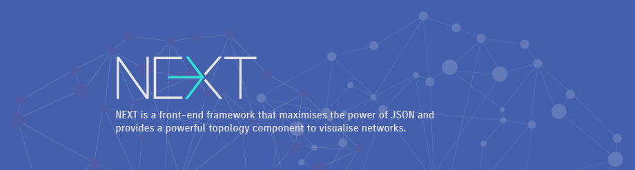
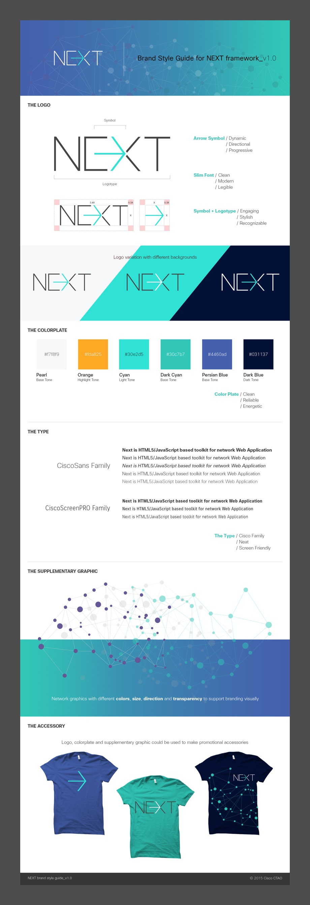
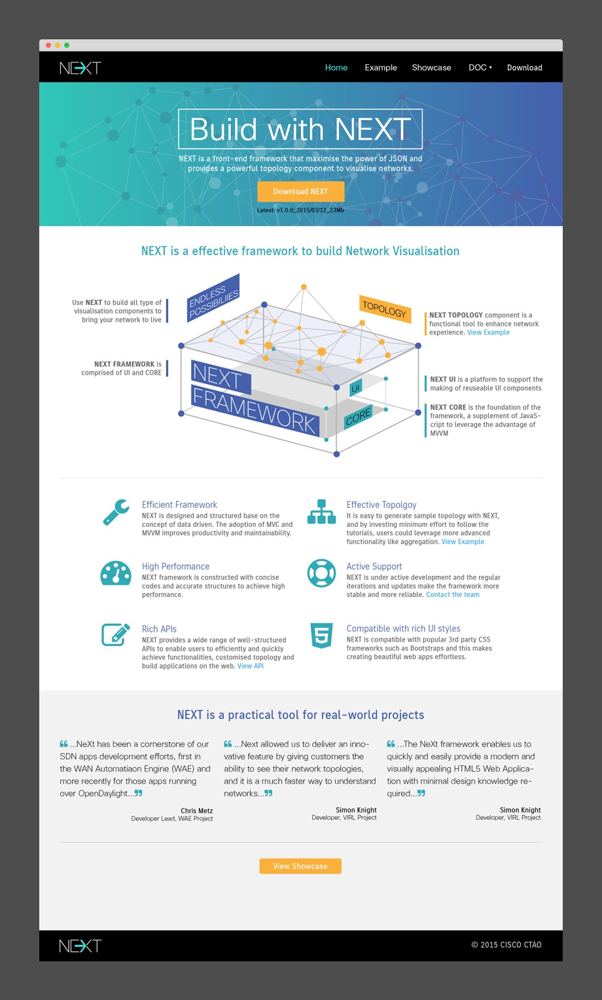

Identity Design for NEXT
BRANDING
A POC (Proof of Concept) project to redesign the website for Microsoft Customer Support Centre in 2011. The new design aimed to enhance user experience by effectively matching the error codes with its solutions. The approach was to effectively integrate Silverlight technology into the answer searching process by making the contents more interactive and vivid. I was the lead designer, and was responsible for the redesign strategy as well as all the interaction and visual designs.
NEXT Style Guide
NEXT Web Site

Back To All Works